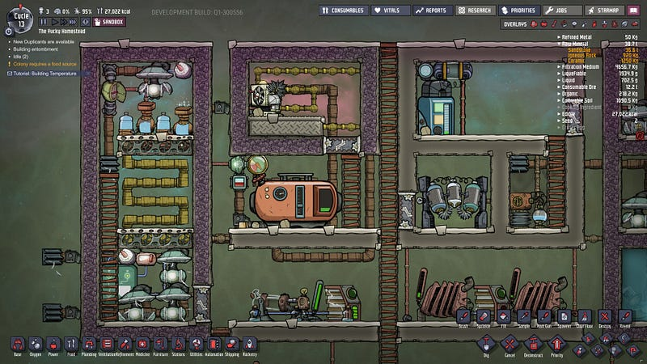
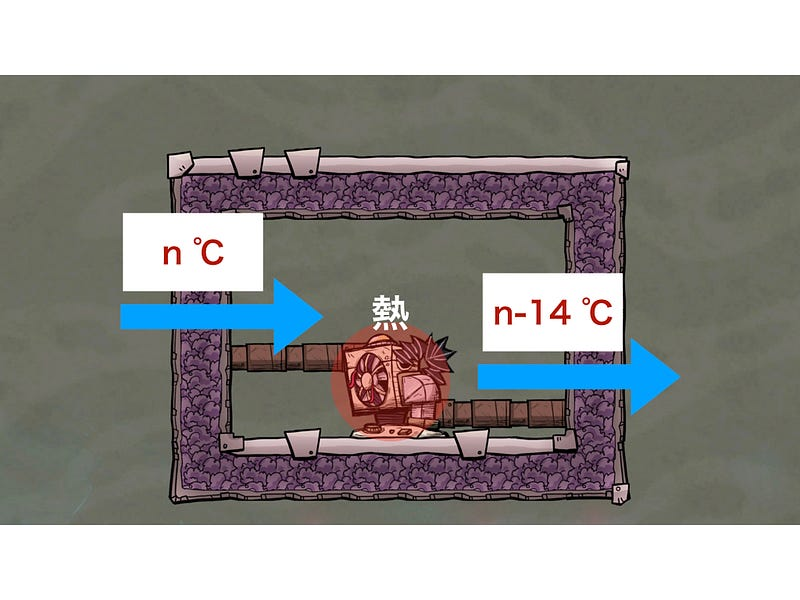
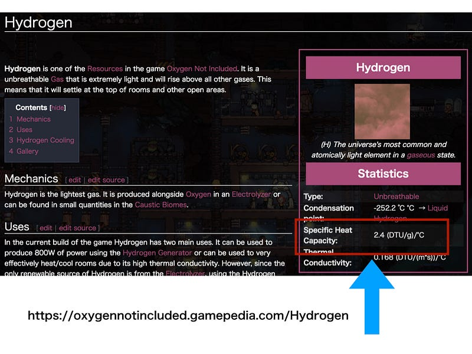
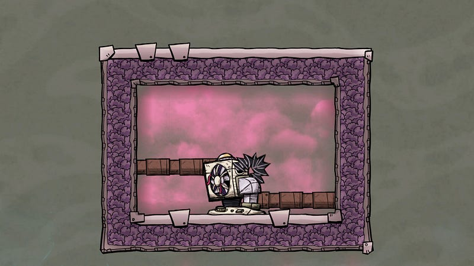
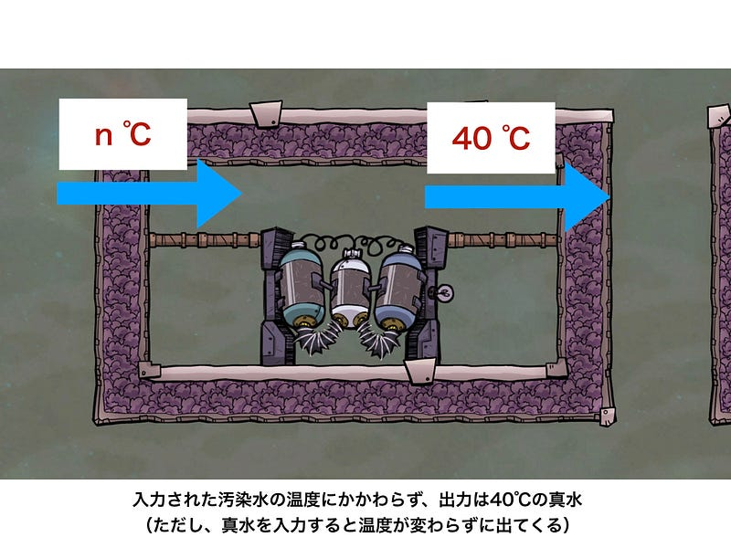
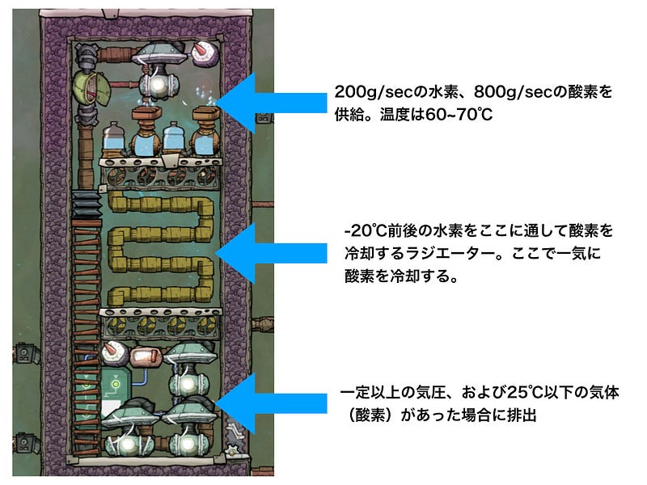
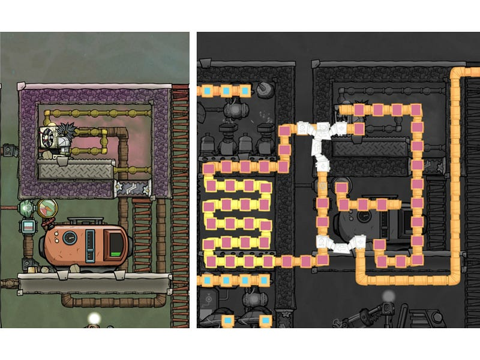
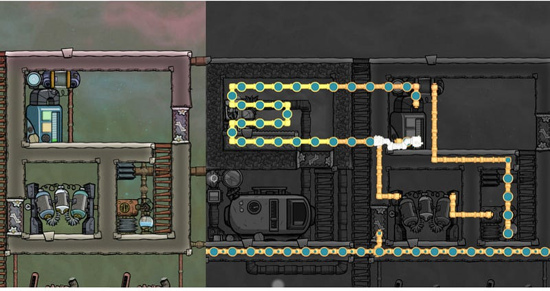

Oxygen Not Included — Thermo Regulatorによる冷却
Oxygen Not Included — Thermo Regulatorによる冷却
これまでOxygen Not Included内で使いにくく感じてずっと使ってなかった設備がある。Thermo Regulator（日本語版では「空調設備」、以後TRと表記）とThermo Aquatuner（同じく「液体クーラー」、以後TAと表記）だ。今回色々試してみて、ようやくゲーム序盤から手に入る資源で安定稼働するよう設計できたので、この設備の使い方について解説する。

ちなみに他人のプレイ動画とかを見てて大分以前からなんとなく使えるのはわかっていたのだが、今回初めて本腰を入れて自分で（サンドボックスでなく）普通のプレイ中に再現できたので、自分の理解をこうしてまとめてみた感じである。
本稿では基本TRについてのみ、解説する。原理はTAも一緒なので、使い方はほぼ一緒となる。違うのは気体と液体という性質の違う資源の質量によるエネルギー消費量、そしてそれによるいくつかの設備の差だ。
TRとは何の装置なのか
まず、TRが何をする機械なのかを理解する必要がある。誤解しやすいが、これらは気体を冷却する機械ではない。
これは電力を使って、気体から奪ったエネルギー（熱）を自らに蓄える装置だ。
具体的には14℃分のエネルギーをうばい、その分の熱を自分に蓄える（ただし、その際にTRも14℃あがる、というわけではない。多分、気体と機械それぞれの熱容量と質量の差のせいだと思われる）

つまりこの装置は「気体のエネルギーを気体から装置に移す」ためのものだということだ。
エネルギーをバッファする
この際、TRが熱を蓄えすぎてそのまま壊れる、というのを皆経験してるのではないだろうか。自分は何回もこれをやってしまい、それ以降使わなくなってしまった。
TRの自壊を防ぐために重要なのはこのエネルギーをTRから受けるためのバッファを用意することだ。
機械が蓄えた熱はエネルギーである。このエネルギーがそのまわりの液体ないし気体にうつることにより、機械そのものの温度は下がり、周囲の物体の温度があがる。
このエネルギーが移動する際、同じ1℃が変化するにも物質の「熱容量」によって、その1℃の変化が起こるためのエネルギー量に差がある。

例えば、水素は酸素の約2倍の熱容量がある。このため、100のエネルギーを与えた場合、酸素の場合n℃変化するとしたら、同じ質量の水素ではn/2℃しか変化しない。
この性質のため、気体の中では水素はエネルギーを溜めるバッファとしてはこのゲーム内では屈指の効率のよい物質だ。
話をTRに戻すと、TRのエネルギーを吸収するために水素ガス内に設置することになる。

これで、TRに送られた気体から奪った熱を今度はTRからじょじょにまわりの水素に移すことができる。
水素のエネルギーを奪う
だが、これだけでは水素そのものの温度がどんどんあがっていき、いつかはTRが壊れるところになってしまう。なので今度はこの水素のエネルギーを奪う方法を考えないといけない。
エネルギーを奪うための仕組みとしてはAnti Entropy Thermo-Nullifier（日本語版では「反エントロピー型熱無効化装置」、以後AETNと表記）がすぐに思いつくが、実はこの機械、最初こそ「お、すげぇのある！」と思いがちだが、ゲームをやりこんでいくとだんだん扱いが難しい事に気がつく。
まずなんと言っても場所が限られる。遺物なので自分では建造できないから当たり前なのだが、そのせいで「ここで冷却をしたい！」という場所で使えない… か、長い導線を引いて装置同士を繋げる必要がある。
また、AETNは設置場所が必ず寒冷バイオームだというのも実はいけてない。寒冷バイオームに育つスリートウィートは栽培が面倒くさいので、野生のまま使いたいのだが、AETNを使おうとすると結構大がかりな工事が必要となり、そのまま残しておきたいのにだいたいその寒冷バイオームを破壊し尽くすことになる。
なので、比較的ポータブルにエネルギーを奪う装置を考える必要がある。
はたしてそんなものはあるのだろうか。もちろん、あるのである。
浄水器という謎装置
このゲームは基本的にエセなりに物理法則に沿うよう作られていて、それが楽しい理由のひとつなのだが、それでもいくつか「謎装置」と呼ばれるものがある。こいつらは全ての法則を無視してエネルギーを消滅させたりする。だから謎装置。
AETNもそのうちのひとつなのだが、今回はポータブルでゲーム序盤で入手可能という縛りで考えると、「浄水器」がそれにあたる。
浄水器は電気と濾過媒体を使い汚染水を真水に変えてくれる機械なわけだが、もうひとつ謎の仕様がある。それは「処理された真水は必ず40℃で出てくる」ということだ。

これ、実はすごいことで、例えば90℃の汚染水があったとしたら、濾過したあとそれは40℃の真水になってでてくるのだ。50℃はどこにいったのか？！TRのような場合は機械に熱が蓄えられるが、浄水器の場合は熱が完全に消えるのだ。まさに謎装置。
賢明な皆様はもう気づかれたと思うが、汚染水を確実に入手できれば、水素のエネルギーを水に移し、ある程度までそれが高まったら謎装置でその熱を一気に消してしまうことが可能になるわけだ。
水程度で冷却できるのか？と思われるかもしれないが、この装置の役目は水素（およびTRを）過熱させないことにあり、特にそれ以上冷却したいわけではない。50℃前後で安定してればそれでいいのだ。
汚染水をどこで調達するか
だがここでまた問題がでてくる。
通常汚染水は欲しくなくともトイレ等からどんどんでてきて処理に困ってしまいがちだ。だが、トイレからの汚染水は無限だが、いかんせん絶対量が豊富ではない。しかも一回枯渇するとそこから簡単にリカバリーが効く類いのものでもない。
今回我々はいわゆる「業務用」装置を作りたいので、意図的に、確実に汚染水を発生させたいのである。トイレのようなものには頼りたくない。
ここでお勧めなのが、Carbon Skimmer（日本語版では「炭素スキマー」、以後CSと表記）だ。炭素スキマーは真水と電気を使い、周囲の二酸化炭素を吸収して代わりに汚染水を排出する。
このゲームでは二酸化炭素は水以上にどんどん溜まる物だ。ゲーム序盤でもそうだし、後半にいけば隕石が落下する際やロケット発射の際に大量の二酸化炭素が発生するので実質無限に安定供給される。
これを使って、常に二酸化炭素を供給できれば汚染水を確実に制御下におきつつ発生させられる。
酸素供給装置の実装
いよいよ実装にうつりたい。今回は電解機による酸素供給装置を作り、そこから得られる酸素をコロニー内に安全に提供可能な温度の酸素にする仕組みを考える。
今回は電気の供給をクローズドにするとかその手のことは考えない。
電解機
まず電解機側だが、こちらは電解機そのものが熱い。これを冷ましたいのはやまやまだが、それより供給する酸素を冷却したいので、酸素がたまるバッファをつくり、そこにTRで冷やした水素を通して冷却する。

TRによる冷却
TR側は、水素ループをただしく作るのが肝心になる。適当な温度（今回は-20℃）をターゲットにして、それ以上の温度の水素だったらTRへ、それ以下の場合は酸素の冷却にまわす。

気体タンクはTRへの水素の供給の為に使う。TRと冷却対象の間には置かないように（TRからタンクにつっこむと、折角冷却した水素がタンク内の水素とまざり、平均された温度の物が出てきてしまう）
酸素を直接冷却する側はこれで終了。
浄水器による冷却
次にTRを冷却する浄水器側を実装する。とは言え、基本は同じだ。
こちらも真水のループを作る。真水の温度がある一定水準を超えたら、CSの側に水が回るようにしておく。

CSは前もって充分な量の二酸化炭素の中に入れておく。真水が供給されたときのみ、動作する。
CSで作成された汚染水はまだ高温のまま。これを浄水器につっこむ。ここで謎のエネルギー消失がおこり、真水となる。結果的には冷却システムとなる。
なお、この程度の冷却では多分真水の温度が90℃まであがることはないだろう。適当に60℃程度でCSが起動するようにしておくと40℃とはいかないが、20℃を一気に消滅させることができ、システムのこの部分は常に40〜60℃の水をループさせることになる。
今回のこの作りを考えてわかるのは、このゲーム内でなにかからエネルギーを奪うには、エネルギーを移動させる仕組みの連鎖を作り、その最後に謎装置で一気にそのエネルギーを消す、という形を取るのがベストということだ。
冒頭で軽く触れたが、TAも同じように冷却できるはずだが、まだ自分でちゃんとゲーム内では実装していない。またこちらの方が消費電力が馬鹿でかいので注意（多分液体のほうが単位あたりの質量が多いからだろう。気体は1kgずつしか処理できないが液体なら10kgずつになる）。
また、さらに冷却が必要な液体酸素や液体水素を作るには、凍結温度が充分に低い液体を使うしかないので、実質TAでしか実現できない。
ただ、そこまで来ると奪うエネルギー量も相当なとのになるので、その際にはきっと蒸気発電を浄水器のかわりに使う必要があるだろう。蒸気発電も熱を奪って発電する謎機械なのである。
これでみんなAETNから卒業できるぞ！